こんにちは Azure Security サポートチームです。
この記事では、Windows Server 2012 R2 と Windows Server 2016 を Microsoft Defender for Endpoint(MDE) にオンボード / オフボードする方法についておまとめいたします。
なお、本記事の内容は、2023 年 11 月 5 日時点で最新の情報を元に作成いたしております。
Windows Server のオンボードに関する最新情報については、Microsoft Learn をご参照ください。
また、サーバを MDE にオンボードした後の正常性確認方法については以下の Blog 記事にておまとめしておりますので、併せてご参照ください。
参考：Microsoft Defender for Endpoint(MDE) にオンボードされたデバイスの正常性確認ポイント | Japan CSS Security Support Blog
本記事の内容
- Windows Server を MDE にオンボードする前の確認ポイント
- サーバを MDE にオンボードするためのスクリプトを配置する
- インストールスクリプトを使用してサーバを MDE にオンボードする
- MDE のオンボードに失敗する場合のトラブルシューティング
- まとめ
Windows Server を MDE にオンボードする前の確認ポイント
オンボード端末の OS バージョンを確認する
Windows Server を MDE にオンボードする前に、サーバの OS バージョンを確認します。
下記リンク先の公開情報に記載の通り、Windows Server 2016 以前と Windows Server 2019 以降のバージョンでは、MDE へのオンボード方法が異なる点にご留意ください。
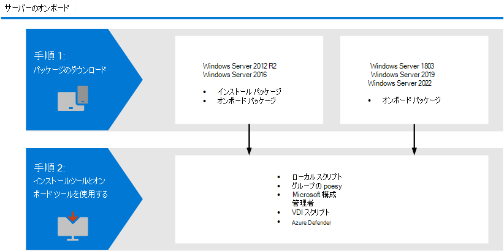
参考情報：Windows サーバーを Microsoft Defender for Endpoint にオンボードします | Microsoft Learn
なお、この記事では、Windows Server 2012 R2 および Windows Server 2016 を MDE にオンボードする方法について記載します。
Windows Server 2019 以降のサーバを MDE にオンボードする場合は、Windows クライアント を MDE にオンボードする に記載の手順に従います。
注意：
Windows Server 2012 R2 は 2023年 10 月 10 日に延長サポートが終了いたしております。
サポートが終了した OS を MDE にオンボードして利用いただくことは非推奨ですので、MDE をご利用いただく場合は、サポート中の OS バージョンへの更新を実施ください。
参考情報：Windows Server 2012 R2 - Microsoft Lifecycle | Microsoft Learn
サーバをオンボードする方法を決定する
MDE にオンボードするサーバのバージョンが Windows Server 2012 R2 または Windows Server 2016 であることを確認したら、次はサーバを MDE にオンボードする方法を決定します。
サーバを MDE にオンボードする場合のステップを以下の通り簡単にまとめます。
MDE にオンボードするサーバが、システムや通信などの最小要件を満たすことを確認します。また、Windows Server 2012 R2 および 2016 をオンボードする場合の要件 についても確認を行います。
Microsoft 365 Defender ポータルからダウンロード可能なインストールパッケージ(md4ws.msi) を使用して、サーバに統合エージェントをインストールします。
統合エージェントパッケージをインストールしたら、展開方法に合わせてダウンロードしたオンボードスクリプトをサーバで実行することで、オンボード操作が完了します。グループポリシー用のスクリプトを使用する場合は、グループポリシーや Install.ps1 を用いて実行する必要があります。
なお、上記の手順は、Microsoft Defender for Cloud(MDfC) の MDE 統合機能を利用しないサーバを MDE にオンボードする場合の手順です。
MDE 統合機能を利用する場合は、ユーザによるパッケージのダウンロードやサーバへの展開作業は不要です。
端末のネットワーク接続を確認する
サーバを MDE にオンボードする前に、端末のネットワーク接続を確認する必要があります。
※ MDE にオンボードされたサーバが上記の通信先との接続に失敗する場合、サーバの情報が Microsoft 365 Defender ポータルに登録されず、EDR などの保護機能の利用に問題が発生する可能性があります。
MDE を使用してサーバを保護するためには、下記の公開情報の [スプレッドシートをダウンロードします] からダウンロード可能なスプレッドシート内の [Microsoft Defender URLs] シートに一覧されている宛先との通信が可能である必要があります。
参考情報：商用のお客様向けのMicrosoft Defender for Endpoint URL リスト (標準)
注意：
MDE の稼働に必要な暗号化通信の復号はサポートされておりません。
そのため、ユーザの環境で TLS(SSL) インスペクションのような HTTPS 通信を復号するシステムを利用する場合は、必ず MDE の通信要件にリストされている通信先を、復号の対象から除外する必要があります。
※ 本記事執筆時点でパブリック プレビュー中の合理化(Streamlined)された接続を使用してオンボードを行う場合には、統合 URL リストのMicrosoft Defender for Endpoint (NEW - 合理化) からダウンロード可能なスプレッドシートを参照します。
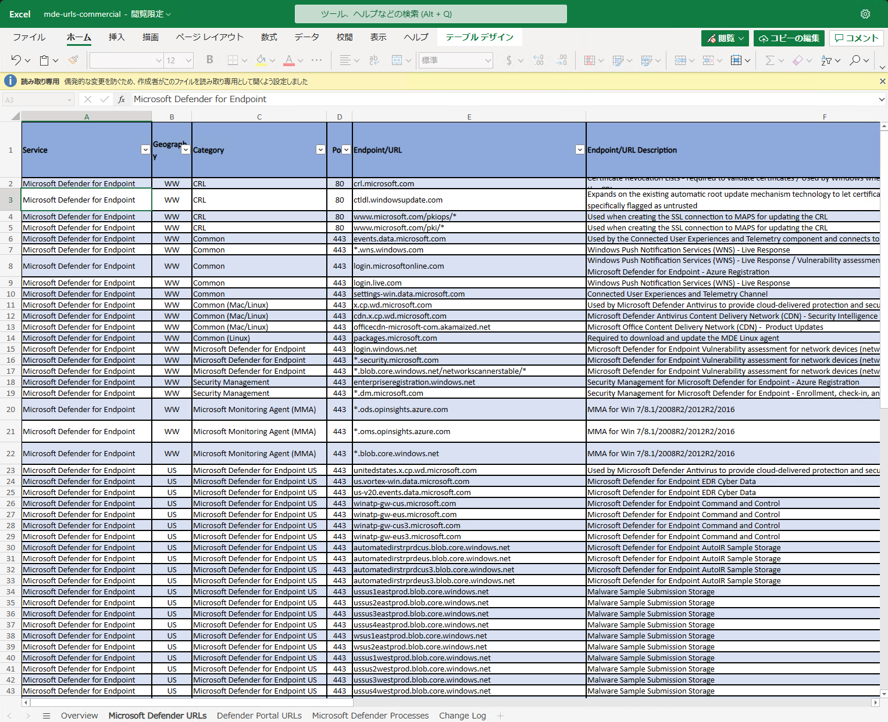
なお、もし MDE にオンボードするサーバがインターネットに直接接続できない環境に配置されている場合には、以下の公開情報にてご案内している手順でプロキシサーバを構成いただく必要があります。
参考情報：情報保護のためにデバイス プロキシとインターネット接続の設定を構成する | Microsoft Learn
上記の公開情報にてご案内している通り、 MDE の通信要件を満たすためには、以下のいずれかのプロキシ設定を使用できます。
WinHTTP プロキシ設定
EDR センサー用のレジストリベースの静的プロキシ設定
※ WinHTTP プロキシ設定は Windows インターネットブラウザプロキシ(WinINet) とは異なります。
また、Microsoft Defender ウイルス対策(MDAV) のクラウド保護やセキュリティインテリジェンスの更新に使用するために、下記公開情報にてご案内している Microsoft Defender ウイルス対策用の静的プロキシ設定も実施いただくことを推奨します。
参考情報：Microsoft Defender ウイルス対策の静的プロキシを構成する | Microsoft Learn
情報：
2023 年 10 月 26 日時点でパプリックプレビューとして提供されている「合理的な接続」を使用してデバイスをオンボードする場合の通信要件については下記の公開情報の記載を参照してください。
サードパーティ製のウイルス対策製品の有無を確認する
MDE にオンボードするサーバが、サードパーティ製のウイルス対策製品を利用しているか、もしくは利用する予定があるか確認します。
MDE による EDR(Endpoint Detection and Response)保護機能は、EPP(エンドポイント保護)機能を持つサードパーティ製のウイルス対策製品と併用して利用いただくことが可能です。
しかし、サーバで MDE と他のウイルス対策製品を併用する場合には、サーバで Microsoft Defender ウイルス対策(MDAV)をパッシブモードに変更する必要があります。
参考情報：Microsoft Defender ウイルス対策の他のセキュリティ製品との互換性 | Microsoft Learn
MMA を使用した旧オンボード方法で MDE にオンボード済みかどうか確認する
Windows Server 2012 R2 および 2016 にてすでに MDE をご利用中の場合には、対象のサーバが Microsoft Monitoring Agent(MMA) を使用する旧オンボード方法によって MDE にオンボードされているかどうかを確認します。
参考情報：Windows サーバーを Microsoft Defender for Endpoint にオンボードします | Microsoft Learn
サーバを MDE にオンボードするためのスクリプトを配置する
本記事では、統合エージェントのインストールとオンボードスクリプトの実行を行うために弊社が提供しているツールである Install.ps1 を使用してサーバを MDE にオンボードする方法について紹介します。
Install.ps1 を使用すると、各端末を手動で MDE にオンボードすることや、Active Directory 管理下のサーバを MDE にオンボードすることなどが可能になります。
参考情報：グループ ポリシーを使用して Microsoft Defender for Endpoint のインストールパッケージとオンボード パッケージを適用する
MDE へのオンボードに必要なファイルを用意する
サーバをオンボードする方法を決定する にて Windows Server 2012 R2 または 2016 を MDE にオンボードする方法を決定したら、オンボード操作に必要な以下のファイルを Microsoft 365 Defender ポータルから取得します。
※ MDE 統合機能を利用して MDE へのオンボードを行う場合は、パッケージのダウンロードやサーバへの展開作業は不要です。
インストールパッケージ(md4ws.msi)
オンボードスクリプト
Install.ps1
MDE へのオンボードに必要なインストールパッケージとオンボードスクリプトは、Microsoft 365 Defender ポータルの [設定]>[エンドポイント]>[オンボーディング] からダウンロードすることが可能です。
Windows Server 2012 R2 または 2016 用のパッケージを取得する場合は、オペレーティングシステムを「Windows Server 2012 R2 または 2016」に変更します。
また、[展開方法] は使用するオンボード方法に合わせて選択します。
Install.ps1 を使用して MDE へのオンボードを行う場合は [展開方法] の設定を「グループポリシー」に変更します。
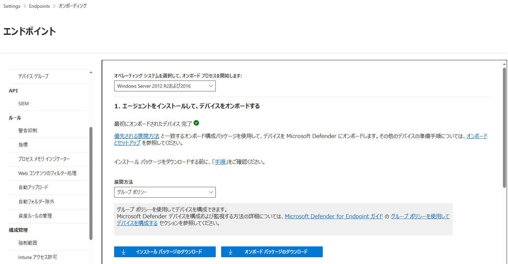
また、Install.ps1 は ダウンロードリンク からダウンロードできます。
上記のリンク先からダウンロードした mdefordownlevelserver-main.zip を展開すると、Microsoft によって署名された Install.ps1 ファイルを取得することができます。
参考情報：インストーラースクリプト
オンボードに必要なファイルを配置する
続いて、取得したインストールパッケージ(md4ws.msi)、オンボードスクリプト(WindowsDefenderATPOnboardingScript.cmd)、Install.ps1 の 3 つのファイルを MDE にオンボードするサーバからアクセス可能なフォルダに配置します。
特定のサーバのみを MDE にオンボードする場合、これらのファイルはそのサーバのローカルフォルダに配置することができます。
また、Active Directory を使用して複数のサーバを一斉に MDE にオンボードする場合は、MDE にオンボードするサーバからアクセス可能な共有フォルダにこれらのファイルを配置する必要があります。(共有フォルダを利用する場合は、対象の共有フォルダに対して書き込みアクセスが許可されている必要があります。)
本記事では、\\FileShareServer\MDEOnboard という UNC パスでアクセス可能な共有フォルダ内に、md4ws.msi、WindowsDefenderATPOnboardingScript.cmd、Install.ps1 の 3 つのファイルを配置した環境で動作確認を実施します。
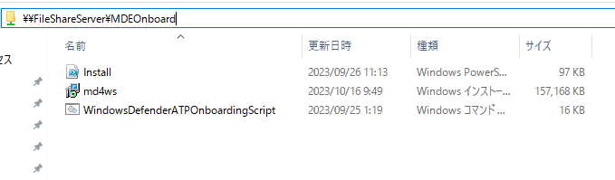
なお、Install.ps1 を使用してオンボードを行う場合には、md4ws.msi のファイル名は変更せず、Install.ps1 と同じフォルダに配置する必要がある点に注意が必要です。
※ オンボーディングスクリプト(WindowsDefenderATPOnboardingScript.cmd) は必ずしも同じフォルダに配置いただく必要はありません。
インストールスクリプトを使用してサーバを MDE にオンボードする
Install.ps1 を使用し、以下の手順で Windows Server 2012 R2 または 2016 を MDE にオンボードします。
事前に必ず、サーバをオンボードする方法を決定する の項を参照し、MDE にオンボードするサーバが Windows Server 2012 R2 または 2016 であることを確認します。
Windows Server 2019 以降のバージョンを使用する場合は、Windows クライアント を MDE にオンボードする に記載の手順に従います。
この時、MDE にオンボードするサーバが要件を満たすことを必ず確認してください。
サーバに必要な更新プログラムが適用されていない場合、統合エージェントのインストールやオンボード操作に失敗する場合があります。
また、サーバが MDE の通信要件を満たしていない場合には、端末の情報が正常にサービスに連携されずにポータルに端末が登録されない問題や、検知アラートを出力できない問題が発生する可能性があります。
MDE の通信要件については 端末のネットワーク接続を確認する の記載を参照してください。
サーバを MDE にオンボードした後で通信の問題が発生した場合のトラブルシューティングを行う際には、MDE にオンボードしたサーバの通信テスト方法 の記載を参照してください。
MMA によりサーバを MDE にオンボードしている場合
MDE にオンボードするサーバが、すでに MMA によって MDE にオンボードされているか確認します。
サーバに MMA がインストールされている場合、C:\Program Files\Microsoft Monitoring Agent\Agent\AgentControlPanel.exe を起動することで MMA に登録されているワークスペース ID などの情報を確認できます。
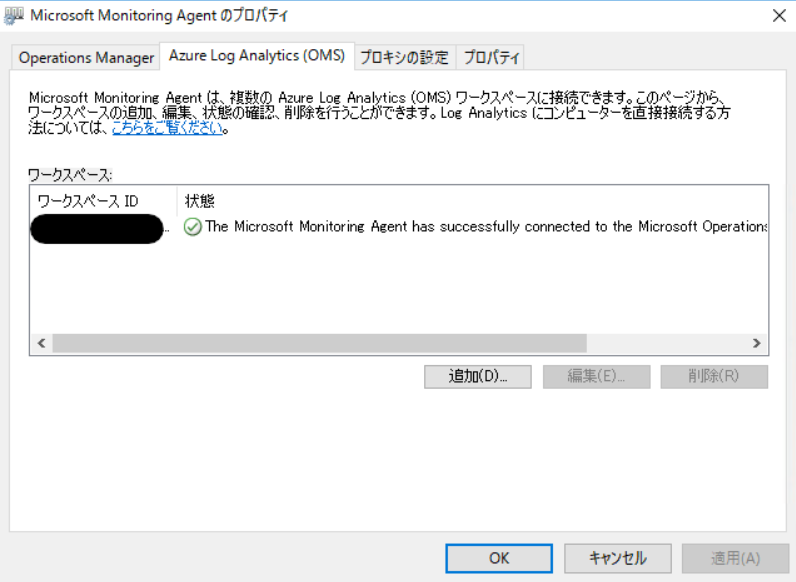
なお、ご利用テナントの MDE にサーバをオンボードするために登録するワークスペース ID は、Microsoft 365 Defender ポータルの [設定]>[エンドポイント]>[オンボーディング] 画面でオペレーティングシステムを [Windows Server 2008 R2 SP1] に変更することで確認いただくことが可能です。
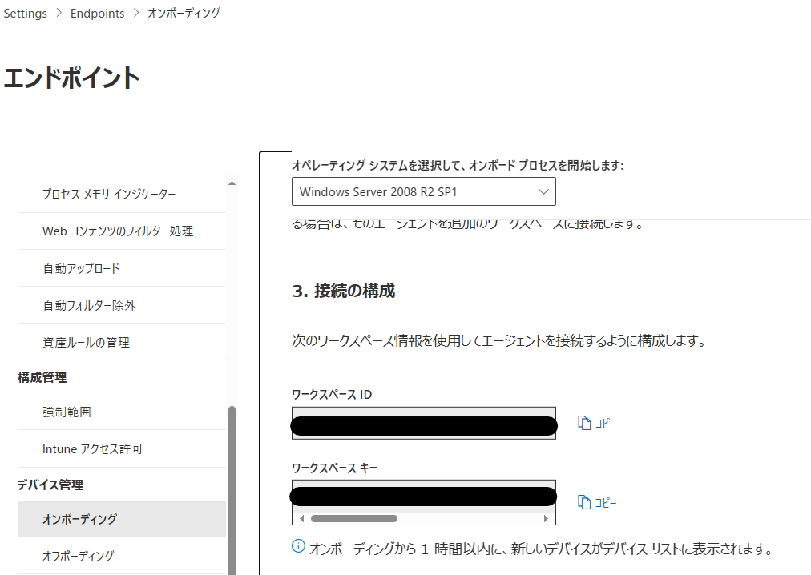
サーバがすでに MMA によってオンボードされている場合には、事前に MMA をアンインストールするか、MMA に登録されている MDE のオンボードに使用しているワークスペース ID を削除してください。
また、サーバの台数が多い場合には、[MMA からの移行オンボードを行う場合](#MMA からの移行オンボードを行う場合) に記載の手順で、Install.ps1 を使用して MMA からワークスペース ID の情報を削除し、MDE へのオンボードを行うことも可能です。
サードパーティ製のウイルス対策製品がインストールされている場合
サードパーティ製のウイルス対策製品の有無を確認する の項を参照し、MDE にオンボードするサーバでサードパーティ製のウイルス対策製品を使用している、もしくは使用する予定があるか確認します。
サードパーティ製のウイルス対策製品を MDE と併用する場合は、Windows Server とパッシブ モード に記載の手順で必ずパッシブモードを有効化する必要があります。
また、すでにサードパーティ製のウイルス対策製品が稼働しているサーバを MDE にオンボードする場合は、一度サードパーティ製のウイルス対策製品をアンインストールいただき、統合エージェントのインストールと MDE へのオンボード操作を実施後にウイルス対策製品を再インストールいただくことをおすすめします。
もしサードパーティ製のウイルス対策製品アンインストールせずに統合エージェントのインストールと MDE へのオンボード操作を実施する場合は、オンボード作業の前に必ず MDAV のパッシブモード設定 を有効化してください。
また、端末のネットワーク接続を確認する ので紹介したスプレッドシートの [Microsoft Defender Processes] シートに記載のプロセスをサードパーティ製のウイルス対策製品のスキャン除外リストに登録いただくとともに、サードパーティ製のウイルス対策製品を MDAV の除外リスト に登録いただくことをおすすめします。
参考情報：Windows サーバーを Microsoft Defender for Endpoint にオンボードします | Microsoft Learn
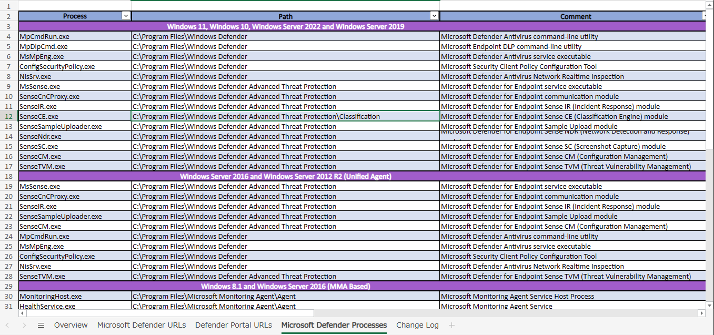
注意：
Windows Server 2016 以降のサーバですでにサードパーティ製のウイルス対策製品を使用している場合、グループポリシーやレジストリ設定にて Microsoft Defender ウイルス対策(MDAV) が無効化されている場合があります。
サーバ OS の場合はサードパーティ製のウイルス対策製品をアンインストールしても MDAV の無効化設定は解除されないため、MDE をご利用いただく前に必ず設定を解除してください。
サーバを MDE にオンボードするコマンド
Install.ps1 を使用してサーバを手動で MDE にオンボードする場合、管理者権限で起動した PowerShell から以下のコマンドを実行します。
1 | PowerShell.exe -ExecutionPolicy RemoteSigned \\FileShareServer\MDEOnboard\Install.ps1 -OnboardingScript \\FileShareServer\MDEOnboard\WindowsDefenderATPOnboardingScript.cmd |
※ 必要なファイルの配置については サーバを MDE にオンボードするためのスクリプトを配置する の項を参照します。
※ 本記事では \\FileShareServer\MDEOnboard という UNC パスでアクセス可能な共有フォルダ内に、md4ws.msi、WindowsDefenderATPOnboardingScript.cmd、Install.ps1 の 3 つのファイルを配置した環境で動作確認を実施しています。
※ \\FileShareServer\MDEOnboard には任意の UNC パスもしくはローカルのフォルダパスを指定することが可能です。
グループポリシーを使用して Install.ps1 による MDE へのオンボード操作を行う場合は以下の公開情報の手順を参照してください。
参考情報：グループ ポリシーを使用して Microsoft Defender for Endpoint のインストールパッケージとオンボード パッケージを適用する
MMA からの移行オンボードを行う場合のコマンド
すでに MMA を使用して MDE にオンボードしているサーバを、新しい統合エージェントを使用して MDE にオンボードする場合、管理者権限で起動した PowerShell から以下のコマンドを実行します。
1 | PowerShell.exe -ExecutionPolicy RemoteSigned \\FileShareServer\MDEOnboard\Install.ps1 -RemoveMMA <MMA に登録されているワークスペース ID> -OnboardingScript \\FileShareServer\MDEOnboard\WindowsDefenderATPOnboardingScript.cmd |
※ \\FileShareServer\MDEOnboard には任意の UNC パスもしくはローカルのフォルダパスを指定することが可能です。
なお、事前に MMA をアンインストール済みの場合や、MMA から MDE のオンボードのために登録しているワークスペース ID を削除している場合は、上記のコマンドではなく サーバを MDE にオンボードするコマンド に記載のコマンドを使用します。
また、グループポリシーを使用して Install.ps1 を使用した MMA からの移行操作を行う場合も、以下の公開情報同じ手順をご利用いただくことができます。
参考情報：グループ ポリシーを使用して Microsoft Defender for Endpoint のインストールパッケージとオンボード パッケージを適用する
サーバが MDE にオンボードされたことを確認する
サーバが MDE に正常にオンボードされたことを確認したい場合には、以下の公開情報の手順をご利用いただけます。
参考情報：Microsoft Defender for Endpoint(MDE) にオンボードされたデバイスの正常性確認ポイント | Japan CSS Security Support Blog
インストールスクリプトを使用して統合エージェントのアンインストールとオフボード操作を行う
テナントの移行やトラブルシューティングの目的でサーバを MDE からオフボードし、統合エージェントのアンインストールを行う場合にも Install.ps1 を使用することができます。
Install.ps1 を使用して統合エージェントのアンインストールとオフボード操作を行う場合は、以下の手順に従います。
Microsoft 365 Defender ポータルにサインインし、[設定]>[オフボーディング] を開きます。
プラットフォームを [Windows Server 2012 および 2016]、[展開方法] を [グループポリシー] に変更した上で、オフボードパッケージ(WindowsDefenderATPOffboardingPackage_valid_until_20XX-XX-XX.zip)をダウンロードします。
※ オフボードスクリプトには 30 日間の有効期限が設定される点にご留意ください。
次に、取得したオフボードパッケージ内のオフボードスクリプト(WindowsDefenderATPOffboardingScript_valid_until_XX-XX-XX.cmd) を サーバを MDE にオンボードするためのスクリプトを配置する の項と同じ手順で取得した Install.ps1 と同じ、MDE からオフボードするサーバからアクセス可能なフォルダに配置します。
MDE からオフボードするサーバにアクセスし、管理者権限で起動した PowerShell から以下のコマンドを実行することで、統合エージェントのアンインストールと MDE からのオフボードが完了します。
1 | PowerShell.exe -ExecutionPolicy RemoteSigned \\FileShareServer\MDEOnboard\Install.ps1 -Uninstall -OffboardingScript \\FileShareServer\MDEOnboard\WindowsDefenderATPOffboardingScript_valid_until_XX-XX-XX.cmd |
※ オフボードスクリプトのファイル名の XX には有効期限の日付の値が入ります。
※ \\FileShareServer\MDEOnboard には任意の UNC パスもしくはローカルのフォルダパスを指定することが可能です。
各サーバで MDE からのオフボードと統合エージェントのアンインストールが完了したことを確認したい場合は、[sc.exe query sense] コマンドを実行します。
Windows Server 2012 R2 および 2016 の場合には、Sense サービスが存在しないことを確認いただくことで、オフボードとアンインストールが正常に完了していると判断することができます。
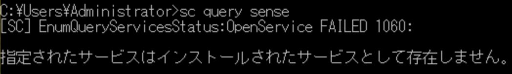
なお、オフボード操作を行う場合も、下記と同じ手順でグループポリシーを使用することで、 Install.ps1 を使用したオフボード操作を複数のサーバに展開することができます。
参考情報：グループ ポリシーを使用して Microsoft Defender for Endpoint のインストールパッケージとオンボード パッケージを適用する
MDE のオンボードに失敗する場合のトラブルシューティング
サーバを MDE にオンボードした後に以下のような問題が発生する場合、対象のサーバが MDE の利用のための要件を満たしていない可能性が考えられます。
サーバのオンボード後、最大で 24 時間以上経過しても Microsoft 365 Defender ポータルにサーバが登録されない
Microsoft 365 Defender ポータルのデバイスインベントリにサーバが登録されたが、[センサーの正常性状態] 列のステータスが [アクティブ] にならない
サーバで検知テストを行ったが、 Microsoft 365 Defender ポータルにアラートが出力されない
一般的に、これらの問題の多くは、MDE にオンボードしたサーバが通信要件を満たしていない場合に発生します。
そのため、サーバを MDE にオンボードした後に上記のような問題が発生する場合は、以下の手順にてサーバが MDE の動作に必要な通信要件を満たしているかどうかを確認してください。
サーバで通信テストを行う
下記公開情報に記載の手順にてサーバで MDEClientAnalyzer ツールを実行することで、サーバが MDE の通信要件を満たすかどうかテストすることが可能です。
参考情報：Windows でクライアント アナライザーを実行する | Microsoft Learn
注意：
MDEClientAnalyzer ツールをローカルサーバで使用する場合には、 SysInternals に含まれる PsExec.exe ツールを実行できることが 前提要件 に含まれます。
サーバで PsExec.exe ツールを制限している場合には、一時的に実行を許可した上で MDEClientAnalyzer ツールを使用してください。
テスト結果は以下のようなレポート(MDEClientAnalyzer.htm)として出力され、 MDEClientAnalyzer ツールの実行後に既定のブラウザで自動的に表示されます。
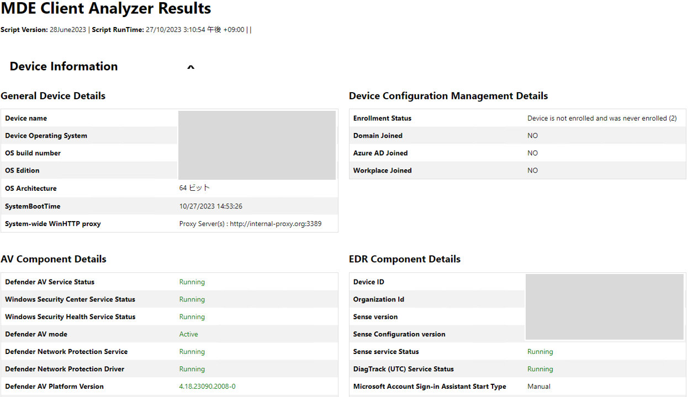
レポートから通信テストの結果を確認する
レポート(MDEClientAnalyzer.htm) から通信テストの結果を確認する場合は、レポートの [Detailed Results] 欄の情報を確認します。
サーバが MDE の通信要件を満たしている場合、以下の例のように通信テストの結果がすべて [Informational] として表示されます。
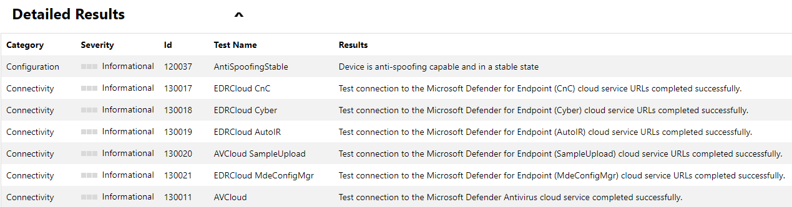
一方で、MDEClientAnalyzer ツールによる通信テストに失敗した項目が存在する場合には、以下のように通信テストの結果が [Error] として表示されます。
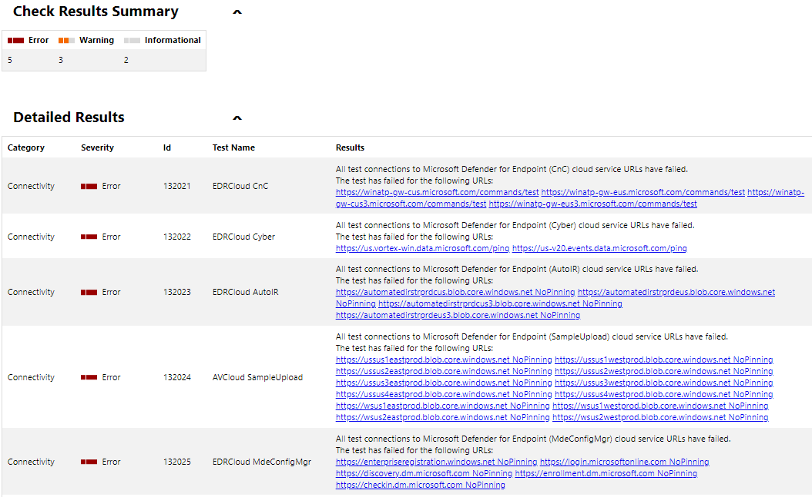
通信テストの結果に [Error] と表示される項目が存在する場合、[Results] 列にはテストに失敗した通信先の URL が表示されます。
レポート内に [Error] の項目が存在する場合、MDE の動作に問題が発生する可能性があるため、[Results] 列に表示される情報と Windows Server を MDE にオンボードする前の確認ポイント の記載を今一度ご確認の上、すべての動作要件を満たすように構成変更を実施します。
通信にプロキシサーバを利用する場合の確認ポイント
インターネット通信にプロキシサーバが必要な構成のサーバで通信テストに失敗する場合、レポート(MDEClientAnalyzer.htm) の [Sense service discovered proxy] に適切なプロキシサーバのアドレスとポート番号が指定されているか確認します。
MDE の稼働に必要な通信要件とプロキシ設定については 端末のネットワーク接続を確認する の項を参照します。
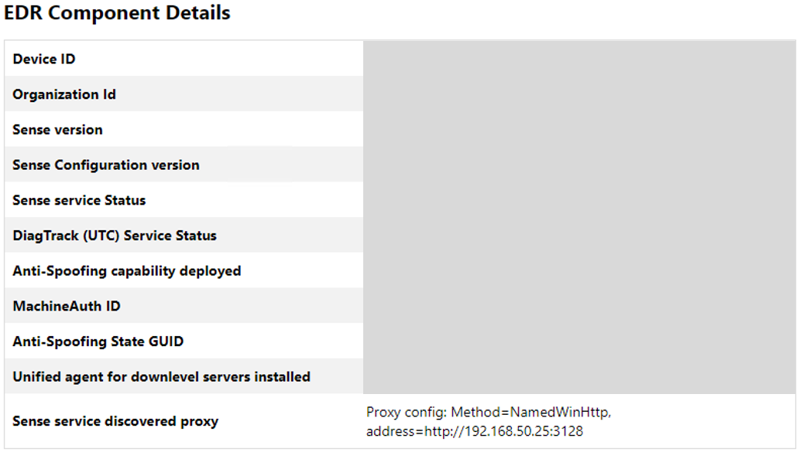
※ 上記は WinHTTP プロキシを構成している場合の出力結果の例です。
プロキシサーバが適切に設定されているにも関わらず通信テストに失敗する場合には、設定されているプロキシサーバ側で必要な通信が許可されていることを確認します。
まとめ
本記事では Windows Server 2012 R2 と Windows Server 2016 を Microsoft Defender for Endpoint(MDE) にオンボード / オフボードする方法についておまとめいたしました。
※ 本情報の内容（添付文書、リンク先などを含む）は、作成日時点でのものであり、予告なく変更される場合がありますことご了承ください。